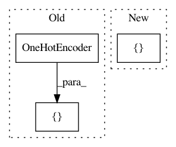

5e9e803c9131b377af305d5302723ba2415001da,examples/benchmarking_large/benchmarking_large.py,,,#,32
Before Change
// We painstakingly initialize each encoder here because that gives us the freedom to initialize the
// encoders with any setting we want.
encoders = [ //category_encoders.BackwardDifferenceEncoder(),
category_encoders.BaseNEncoder(),
category_encoders.BinaryEncoder(),
category_encoders.HashingEncoder(),
// category_encoders.HelmertEncoder(),
category_encoders.JamesSteinEncoder(),
category_encoders.LeaveOneOutEncoder(),
category_encoders.MEstimateEncoder(),
category_encoders.OneHotEncoder(),
category_encoders.OrdinalEncoder(),
// category_encoders.PolynomialEncoder(),
// category_encoders.SumEncoder(),
category_encoders.TargetEncoder(),
category_encoders.WOEEncoder()]
// Initialization
if os.path.isfile("./output/result.csv"):
os.remove("./output/result.csv")
After Change
// We painstakingly initialize each encoder here because that gives us the freedom to initialize the
// encoders with any setting we want.
encoders = [category_encoders.BackwardDifferenceEncoder(),
category_encoders.BaseNEncoder(),
category_encoders.BinaryEncoder(),
category_encoders.HashingEncoder(),
category_encoders.HelmertEncoder(),
category_encoders.JamesSteinEncoder(),
category_encoders.LeaveOneOutEncoder(),
category_encoders.MEstimateEncoder(),
category_encoders.OneHotEncoder(),
category_encoders.OrdinalEncoder(),
category_encoders.PolynomialEncoder(),
category_encoders.SumEncoder(),
category_encoders.TargetEncoder(),
category_encoders.WOEEncoder()]
// Initialization
if os.path.isfile("./output/result.csv"):
os.remove("./output/result.csv")
In pattern: SUPERPATTERN
Frequency: 4
Non-data size: 3
Instances
Project Name: scikit-learn-contrib/categorical-encoding
Commit Name: 5e9e803c9131b377af305d5302723ba2415001da
Time: 2019-04-27
Author: jan@motl.us
File Name: examples/benchmarking_large/benchmarking_large.py
Class Name:
Method Name:
Project Name: automl/auto-sklearn
Commit Name: c1119d49f9ca21b2517469234d9ebf7305560686
Time: 2017-11-21
Author: feurerm@informatik.uni-freiburg.de
File Name: autosklearn/pipeline/classification.py
Class Name: SimpleClassificationPipeline
Method Name: _get_pipeline
Project Name: automl/auto-sklearn
Commit Name: 57b14db8d7ac345c3aef928033c133a5e04752f1
Time: 2017-11-22
Author: feurerm@informatik.uni-freiburg.de
File Name: autosklearn/pipeline/regression.py
Class Name: SimpleRegressionPipeline
Method Name: _get_pipeline
Project Name: scikit-learn-contrib/categorical-encoding
Commit Name: f1c220bd87fb50668974f60b1309fc4a5814ebe6
Time: 2018-10-08
Author: jan@motl.us
File Name: examples/benchmarking_large/benchmarking_large.py
Class Name:
Method Name: